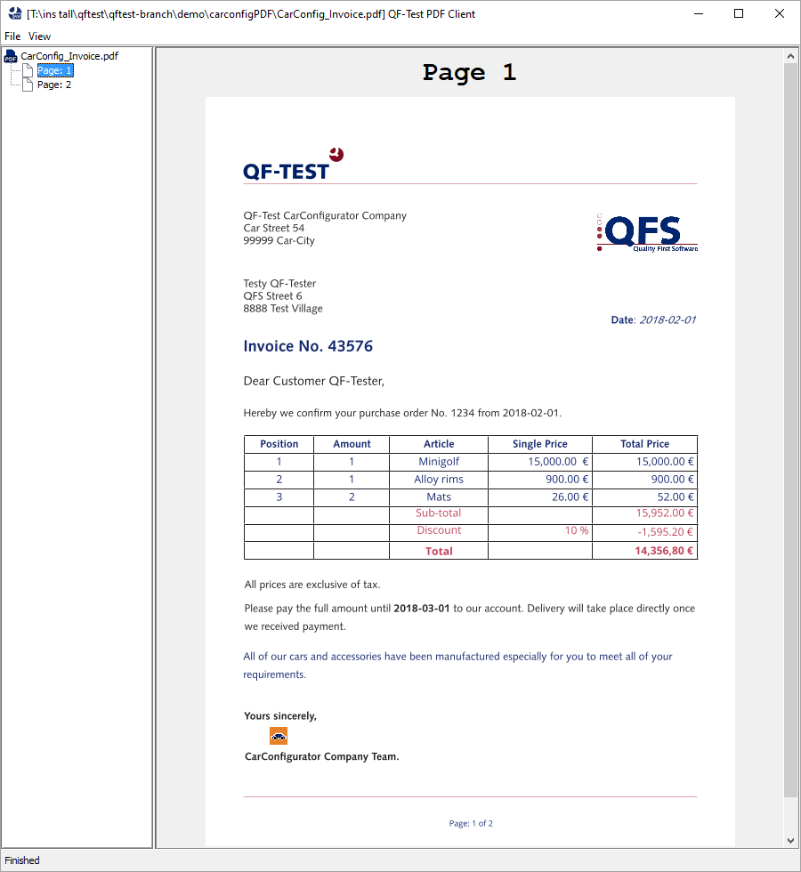
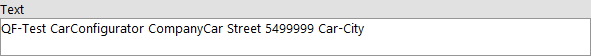
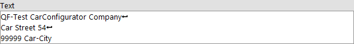
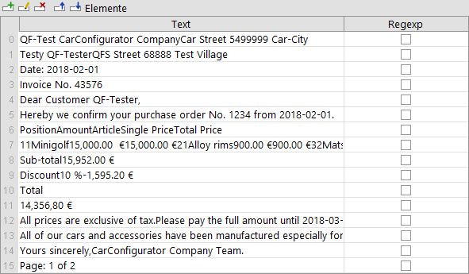
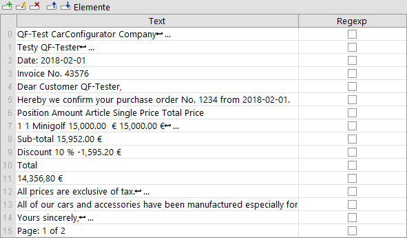
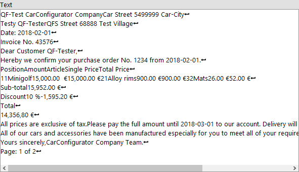
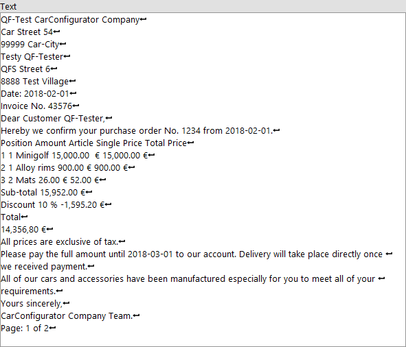
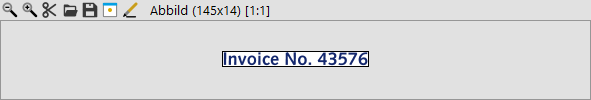
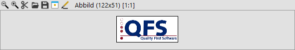
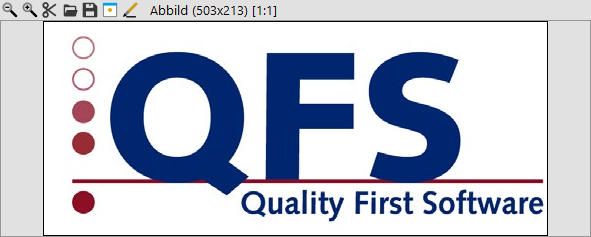

| Version 6.0.3 |
QF-Test bietet ab Version 4.2 die Möglichkeit, PDF-Dokumente analog zu GUIs zu
testen. D.h. QF-Test analysiert die Struktur des PDF-Dokuments und erkennt einzelne
Komponenten, deren Eigenschaften getestet werden können.
QF-Test kann mittels Aufnahme und Wiedergabe
direkt Events sowie diverse Checks
aufnehmen und wiedergeben.
 Video: 'PDF-Dokumente testen mit
QF-Test'
Video: 'PDF-Dokumente testen mit
QF-Test'
Das zu testende PDF-Dokument wird von QF-Test in einen Viewer geladen, der von QF-Test als Client-Prozess gestartet wird.
Mit Hilfe des Schnellstart-Assistenten lässt sich die passende Setup-Sequenz erstellen, wobei als Typ der Anwendung "PDF Dokument" zu wählen ist (vgl. Kapitel 3). Dies ermöglicht den einfachen Start des Viewers. Als konkreter Startknoten wird hierbei der 'PDF Client starten' Knoten verwendet.
Im Fenster des PDF Client befindet sich links eine Navigationsspalte mit einer Übersucht der Seiten
des PDF Dokuments.
Im rechten Fensterbereich wird die aktuell selektierte Seite angezeigt.
Der folgende Screenshot zeigt den PDF Client mit einem geöffneten Demo PDF Dokument.
|
|  | ||
|
| Abbildung 16.1: PDF Client Hauptfenster mit geöffnetem PDF Dokument | ||
Um während der Testausführung z.B. ein anderes Dokument zu öffnen oder die Seite des geöffneten PDFs zu ändern, können 'Auswahl' Knoten verwendet werden. Diese Aktionen lassen sich direkt im Aufnahme-Modus aufzeichen. Im Auswahl Knoten muss als Komponente das "Window" des PDFs angegeben werden.
Es ist möglich, während der Ausführungszeit ein anderes PDF-Dokument zu öffnen.
Dazu muss im
Detail-Attribut des
'Auswahl' Knotens
das open: Event angegeben werden.
Hierbei kann nun der Pfad zum PDF-Dokument angegeben werden. Relative Pfade werden relativ zum aktuellen Verzeichnis der Testuite aufgelöst.
|
|
|
|||
|
| Beispiel 16.1: Laden eines PDF-Dokuments | |||
Wenn das Dokument nicht gefunden oder geladen werden kann wird eine TestException geworfen.
Um auf eine besimmte Seite zu wechseln, kann im
Detail-Attribut des
'Auswahl' Knotens
das goto: Event angegeben werden.
Hier kann analog zu dem Seitennummer-Attribut, die Seite als Zahl für die Seitennummer bzw. in Anführungszeichen für den Seitentitel angegeben werden.
|
|
|
|||
|
| Beispiel 16.2: Öffnen einer bestimmten Seite | |||
Sollte die gewünschte Seite nicht zur Verfügung stehen, so wird eine PageNotFoundException geworfen.
Für PDF-Komponenten (vgl. Abschnitt 16.4) stehen folgende Checks zur Verfügung, die auch direkt mittels dem Check-Aufnahme-Modus aufgezeichnet werden können:
Der 'Check Text' Knoten ist in 'Check Text' beschrieben. Für PDF-Text-Komponenten gibt es bei Text-Komponente zwei Check-Typen: "default" und "Text positioniert".
Zeilenumbrüche sind im PDF-Dokument nicht enthalten, Leerzeichen nicht zwingend. Die Abstände ergeben sich aus den Koordinaten der einzelnen Buchstaben. Der Check-Typ "default" prüft den Text wie er im PDF-Dokument abgespeichert ist - ohne Zeilenumbrüche und eventuell ohne Leerzeichen, wenn keine enthalten sind. QF-Test errechnet aus den Koordinaten der einzelnen Buchstaben wo die Zeilenumbrüche angezeigt werden und wo Abstände, die auf Leerzeichen schließen lassen, vorhanden sind. Der Check-Typ "Text positioniert" greift auf diesen aufbereiteten Text zu.
|
|  | ||
|
| Abbildung 16.2: Check Text 'default' Aufnahme | ||
|
|  | ||
|
| Abbildung 16.3: Check Text 'Text positioniert' Aufnahme | ||
4.4+
Zusätzlich kann der gesamte Text der Seite auf der Main Stage mit den Check-Typen
"Text (gesamte Seite)", "Text positioniert (gesamte Seite)", "Text als Elemente (gesamte Seite)"
sowie "Text positioniert als Elemente (gesamte Seite)" geprüft werden.
Dabei werden alle Text-Komponenten der Seite sortiert nach Y/X-Position aufgenommen. Die Check-Typen unterscheiden sich
dabei, ob der Text positioniert/aufbereitet wird (siehe oben) oder nicht
und ob die einzelnen Text-Komponenten als 'Check Elemente' oder als gemeinsamer 'Check Text' aufgenommen werden.
|
|  | ||
|
| Abbildung 16.4: Check Elemente 'Text als Elemente (gesamte Seite)' Aufnahme | ||
|
|  | ||
|
| Abbildung 16.5: Check Elemente 'Text positioniert als Elemente (gesamte Seite)' Aufnahme | ||
|
|  | ||
|
| Abbildung 16.6: Check Text 'Text (gesamte Seite)' Aufnahme | ||
|
|  | ||
|
| Abbildung 16.7: Check Text 'Text positioniert (gesamte Seite)' Aufnahme | ||
Der 'Check Abbild' Knoten ist in 'Check Abbild' beschrieben. Für alle Komponenten Typen gibt es den Check-Typ "default".
Der Check-Typ "default" prüft das Objekt, wie es auf der PDF-Seite angezeigt wird, ggf. skaliert und mit überdeckenden Objekten oder Objektteilen. Das aufgenommene Bild entspricht also der tatsächlichen Darstellung.
|
|  | ||
|
| Abbildung 16.8: Check Abbild 'default' Aufnahme eines Text Objekts | ||
|
|  | ||
|
| Abbildung 16.9: Check Abbild 'default' Aufnahme eines Image Objekts | ||
In PDF-Dokumenten können auch echte Bilder eingebettet werden. Dieses Image kann für die Anzeige auf der PDF-Seite skaliert werden. Für echte Bilder werden noch weitere Check-Typen angeboten:
Der Check-Typ "unskaliert" prüft das in der Datei originale eingebettete unskalierte Bild.
|
|  | ||
|
| Abbildung 16.10: Check Abbild 'unskaliert' Aufnahme eines Image Objekts | ||
Der Check-Typ "skaliert" prüft das auf der PDF-Seite angezeigte, ggf. skalierte Bild ohne überdeckende Objekte. Somit können auch teilverdeckte Abschnitte dieser Bilder geprüft werden.
|
| |||
|
| Abbildung 16.11: Check Abbild 'skaliert' Aufnahme eines Image Objekts | ||
Der 'Check Text' Knoten mit dem Check-Typ "text_font" erlaubt das Überprüfen des Fonts.
Innerhalb einer PDF-Text-Komponente können verschiedene Fonts verwendet werden. 'Check Font' gibt für eine Text-Komponente den Font zurück, der mehrheitlich verwendet wird.
Der 'Check Text' Knoten mit dem Check-Typ "text_fontsize" erlaubt das Überprüfen der Fontgröße.
Innerhalb einer PDF-Text-Komponente können verschiedene Fontgrößen verwendet werden. 'Check Font Größe' gibt für ein Textobjekt die Fontgröße zurück, der mehrheitlich verwendet wird.
QF-Test erkennt folgende Objekttypen:
|
|
|
|||||||||||||||||
|
| Tabelle 16.1: Unterstützte PDF-Objekte | |||||||||||||||||
QF-Test kann die erkannten PDF-Objekte farbig umranden, wenn diese Funktion
im Menü View -> Show components oder das Tastenkürzel STRG-T aktiviert wird.
Bei der Aufnahme und Wiedergabe muss diese Funktion deaktiviert sein, da die Rahmen
ansonsten bei Abbild-Vergleichen mit aufgenommen werden.
Für die einzelnen Objekttypen gilt folgender Farbcode:
|
|
|
||||||||||||
|
| Tabelle 16.2: Farbcode der PDF-Objekte | ||||||||||||
QF-Test stellt die PDF-Objekte als Swing-Komponenten dar, auf die über das Swing-API z.B. aus SUT-Skripten heraus zugegriffen werden kann (vgl. Kapitel 11)
Die Basisinformationen für die Identifizierung der PDF-Objekte auf der Seite sind, wie bei allen QF-Test-Komponenten, ihre Klasse, Geometrie und Strukturinformationen (Index). Für Textkomponenten stehen außerdem über 'Weitere Merkmale' der mehrheitlich zugeordnete Font und die mehrheitlich verwendete Fontgröße zur Verfügung. Für Image-Objekte wird in 'Weitere Merkmale' der Image hash und für Shader-Objekte der Shader-Typ mit aufgenommen.
Des weiteren versucht QF-Test bei einem Textobjekt anhand seiner Merkmale zu erkennen, ob es sich um eine Überschrift oder Beschriftung handelt. In diesem Fall erhält das Textobjekt die QF-Test Klasse "Label". Über den QF-Test Standardalgorithmus für "qfs:label" in 'Weitere Merkmale' kann dieses Label anderen QF-Test Komponenten zugeordet werden.
Da der Standardalgorithmus zur Erkennung von Überschriften und Beschriftungen mit Annahmen und Wahrscheinlichkeiten arbeiten muss, kann es auch zu Fehltreffern (false positive) oder Nichterkennung kommen. In diesem Fall können Resolver (Abschnitt 50.1) zur Verbesserung der Erkennung eingesetzt werden. Auch die Zuordnung der Label-Komponente zu anderen Komponenten kann über Resolver gesteuert werden.
| Letzte Änderung: 6.9.2022 Copyright © 1999-2022 Quality First Software GmbH |